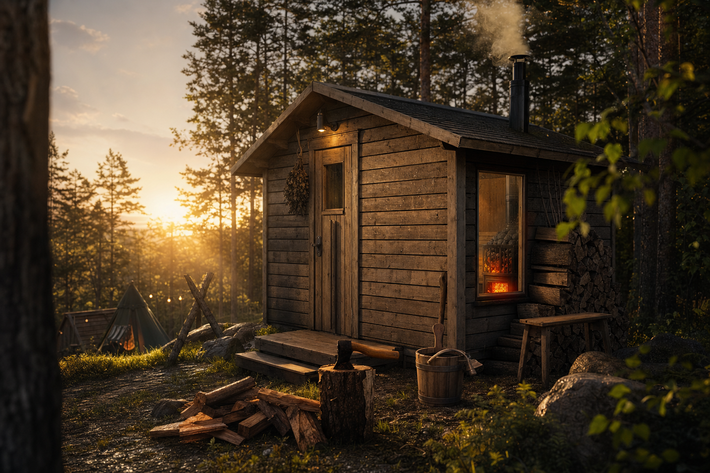

01
Forest Tent
森の静けさを独り占めする、プライベートなテントサイト。

Kurashizen Camp Field
火を眺めること。
山を歩くこと。
コーヒーを淹れること。
何もしない時間を味わうための場所です。
森の静けさを独り占めする、プライベートなテントサイト。

木の香りに包まれながら過ごす山小屋ステイ。

自然と向き合うための静かな隠れ家。

火を囲みながら、ゆっくり夜が深まっていく。

朝の湖面に映る静かな山の景色。


鳥の声に耳を澄ませ、原生林をゆっくりと
歩く感覚を開放する時間。
阿蘇の澄んだ夜空に広がる、
息をのむような満天の星々。
朝霧に包まれる山々を眺めながら、
自分で豆を挽き、淹れる至福の一杯。
都会の喧騒から離れ、ただ静寂と向き合うこと。
情報に溢れた日常から一度プラグを抜き、風の音や木々の揺らぎに身を委ねる。
私たちは、洗練された不便さの中で、人間が本来持っている豊かな感覚を取り戻すための美しい調律の場を提供したいと考えています。

セルフロウリュが可能な木造りのサウナ小屋。
しっかりと火照った身体を、山から流れ出る純粋な湧き水の水風呂で引き締め、大自然の中で外気浴を行う。
山々の木々が一斉に芽吹き始め、最も生命力を感じる美しい季節がやってきました。
あえて何もない環境に身を置くことで、普段気づかない心の余白と丁寧な暮らしに出会えます。


山は、何も語らない。
だからこそ、
自分の声が聞こえる。
場所 ： 熊本県阿蘇市
阿蘇の雄大な自然に囲まれた静かな場所。
福岡・熊本市内から車で約1時間半。